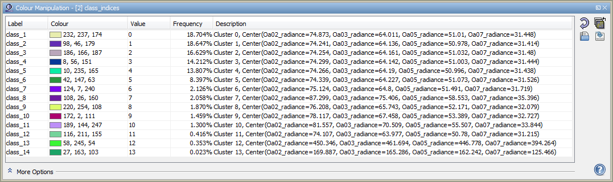
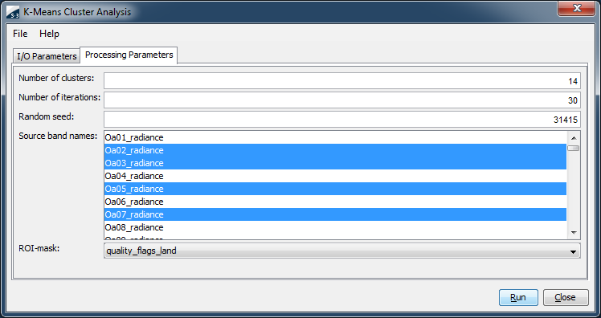

| K-Means (KM) Cluster Analysis |
|
Cluster analysis (or clustering) is the classification of objects into different groups, or more precisely, the partitioning of a data set into subsets (clusters or classes), so that the data in each subset (ideally) share some common trait - often proximity according to some defined distance measure. Data clustering is a common technique for statistical data analysis, which is used in many fields, including machine learning, data mining, pattern recognition, image analysis and bioinformatics. The computational task of classifying the data set into k clusters is often referred to as k-clustering.
The k-means clustering tool implemented in SNAP is capable of working with arbitrary large scenes. Given the number of clusters k, the basic algorithm implemented in SNAP is:
The convergence criterion is met when the maximum number of iterations specified by the user is exceeded or when the cluster centers did not change between two iterations. This algorithm should be your primary choice for performing a cluster analysis. For the analysis of large scenes, this algorithm is strongly recommended.
The result of the cluster analysis is written to a band named class_indices. The values in this band indicate the class indices, where a value '0' refers to the first cluster, a value of '1' refers to the second cluster, etc. The class indices are sorted according to the number of members in the corresponding cluster, i.e. a class index of '0' refers to the cluster with the most members.
Note that an index coding is attached to the class_indices band, which can be edited in the Color Manipulation Window. It is possible to change the label and the color associated with a class index. The last columns of the color manipulation window lists the location of the cluster centers. The cluster centers are also listed in the Cluster-Analysis group of the product metadata.

The k-means (KM) cluster analysis tool can be invoked from the Sentinel Toolbox tool menu by selecting
the K-Means Cluster Analysis command in the Image Analysis submenu. In the command line it is
available by means of the Graph Processing Tool gpt which is located in the Sentinel Toolbox
bin directory. Please type gpt KMeansClusterAnalysis -h for further information.
Selecting the K-Means Cluster Analysis command from the Sentinel Toolbox tool menu pops up the following dialog:

Name: Here the user specifies the name of the source product. The combo box presents a list of all products opened in the Sentinel Toolbox. The user may select one of these or, by clicking on the button next to the combo box, choose a product from the file system.
Name: Used to specify the name of the target product.
Save as: Used to specify whether the target product should be saved to the file system. The combo box presents a list of file formats, currently BEAM-DIMAP, GeoTIFF, and HDF5. The text field allows to specify a target directory.
Open in SNAP: Used to specify whether the target product should be opened in the Sentinel Toolbox. When the target product is not saved, it is opened in the Sentinel Toolbox automatically.

Number of clusters: Use this field to specify the number of clusters. The default is 14 clusters.
Number of iterations: Use this field to specify the maximum number of iterations to be carried out. The default is 30 iterations. The cluster analysis stops when the maximum number of iterations is exceeded.
Random seed: The KM algorithm starts with a pseudo-random distribution of initial clusters. The random seed initializes the pseudo-random number generator, which is used to generate the initial clusters. By changing the random seed, you can start with different initial clusters. Any positive integral number will be a perfect random seed. The default seed is 31415.
Source band names: Use this field to specify the names of the source bands. Press the control key while selecting or deselecting individual bands.
ROI-Mask: Use this field to restrict the cluster analysis to a region-of-interest (ROI). The combo box allows to select the band which provides the ROI.
Run Creates the target product. The cluster analysis is actually deferred until its band data are accessed, either by writing the product to a file or by viewing its band data. When the Save as option is checked, the cluster analysis is triggered automatically.
Close Closes the dialog.
Help Displays this page in Sentinel Toolbox Help.
A good starting point for obtaining further information on cluster analysis terms and algorithms is the Wikipedia entry on data clustering.